Ideudvikling
Inspiration
Jeg skulle udvælge en stil til mit spil fik meget inspiration af Jade Purple Browns stil.
Jeg havde tænkt at min main karakter skulle være en kok eller en gammel mand, også endte jeg med at vælge en gammel mand.
Efter jeg havde tegnet mine skitser begyndte jeg at arbejde i illustrator, da jeg synes det var nemmere at få mine ideer ud da jeg ikke er den bedste til at tegne. Jeg startede med at tegne min main karakter og mine gode og dårlige elementer.
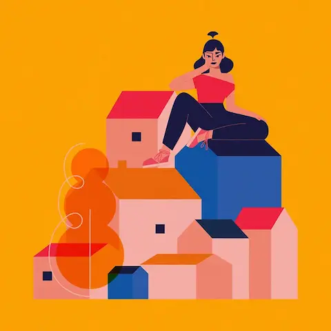
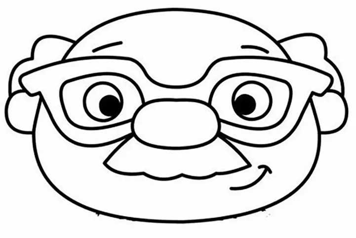
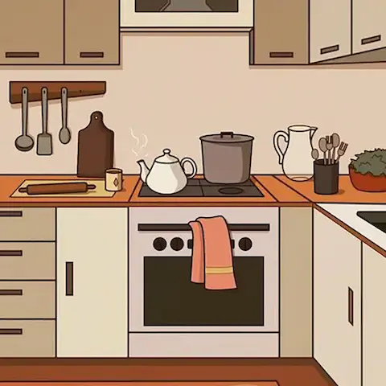
 
 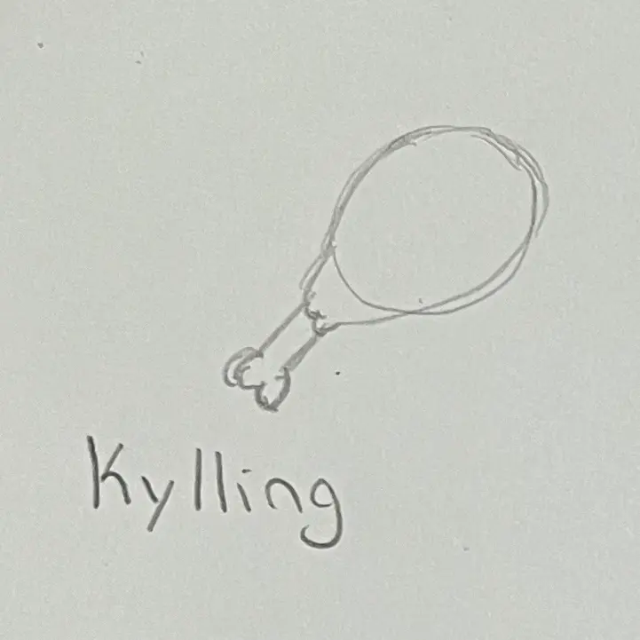
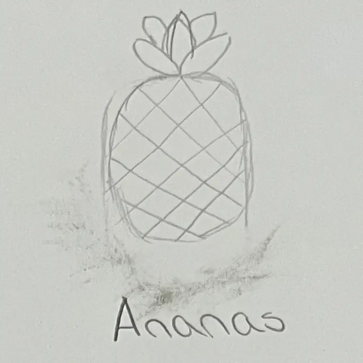
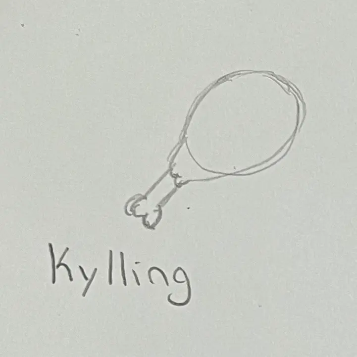
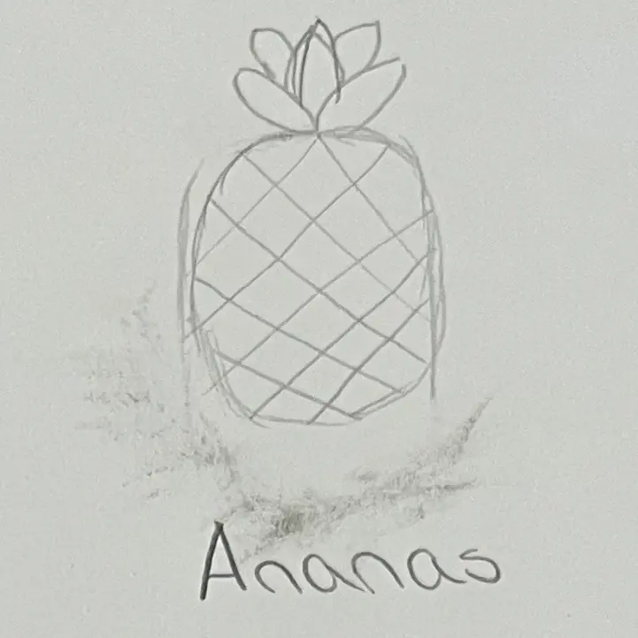